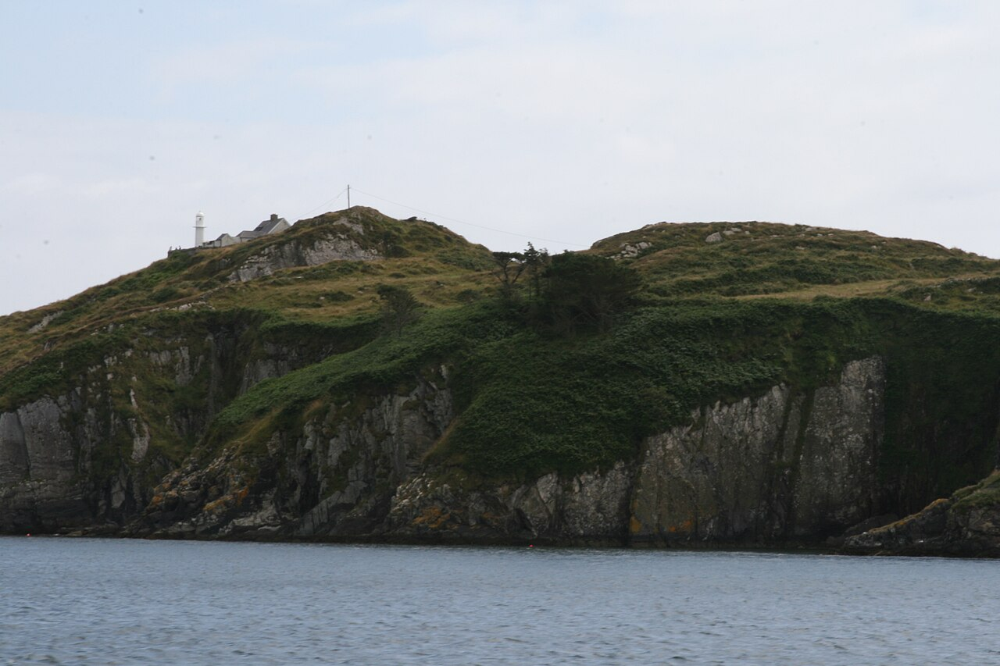
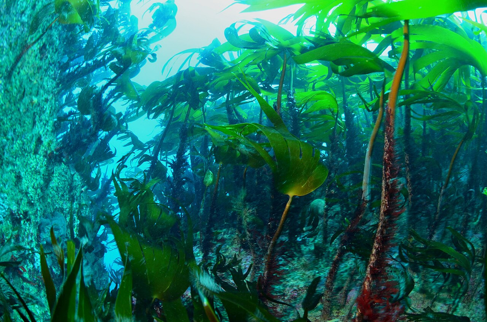

- Why this place?
- Available evidence
- What the app calculated
A COASTAL HABITAT ATLAS / WEST CORK
A living coast.
A clearer next step.
Where might kelp matter for coastal protection, and what should we verify before investing?
Bring scattered habitat evidence into one place to choose the next survey or coastal assessment.
A working research prototype. AI-assisted preparation before 16–18 October 2026.

IRELAND / THREE DIFFERENT ROLES
One pilot.
A wider research coast.
West Cork carries the working calculation. Galway tests transfer questions. Clare connects the story to field ecology.
Natural Earth, public domain. Generalised outline, approximate context markers.
01 / EXPLORE HABITAT
Where is the habitat, and how do we know?
Choose a coloured area. Its evidence, physical model and limits stay together.
For marine scientists: separate places worth checking from places already supported by a survey.
Modelled subtidal cellsDetected intertidal proxyHistorical reference
OPW flood layers withheld while reuse permission is unresolved. The local map does not depend on internet tiles.
Keyboard area selection and full receptor screen
| Mapped object | Type | Geographic screen | Distance |
|---|
02 / HABITAT HEALTH & BIODIVERSITY
A forest is more than its footprint.
Environmental signals show context. They cannot tell us how much kelp this bed has lost.

Living space beneath the canopy
Kelp creates habitat for marine communities and supports food webs. Irish field research, including Kilkee Harbour, helps describe those relationships.
The atlas brings that ecological context beside regional records. It does not infer the species currently living in these seven model cells.
Schoenrock et al. (2021): western Irish kelp ecology ↗Offshore wave exposure
Annual mean Hs in offshore reanalysis. Year coverage is available in the evidence download. Descriptive variability is not a measured decline signal.
Regional temperature context
REGIONAL PRESENCE INDICATOR
reference taxa recorded
Count the distinct reference taxa recorded at West Cork dive sites. A fuller species list often reflects more observation effort.
Filled = recorded. Open = unrecorded, not proven absent. This is not a percentage biodiversity score.
What is the condition of this bed?
Kelp decline: not measurable with current evidence.
No comparable repeat extent, biomass or density measurements establish loss here. The EPA macroalgae quality element was High in its available historical cycles, but those waterbody assessments did not measure this model bed.
Taxa, source and sampling effort
For coastal planners: test the assumptions before commissioning a detailed appraisal.
03 / COASTAL PROTECTION & VALUE
A smaller wave is only the first step.
We estimate a physical effect inside assumed kelp. Establishing benefits on land needs the next links in the chain.
With and without the assumed habitat
CONCEPTUAL MODEL ILLUSTRATION · NOT A FLOOD SIMULATION
Schematic, equal incoming wave energy across sampled paths. Offshore Hs is not substituted as the nearshore incident height.
Wave-height reduction
Wave-energy reduction
Wave intercept across footprint
What connects to the shore?
- HabitatSuitability model plus historical reference. Present species and density need field checks.
- Wave path
- Shoreline hazardNot quantified. Refraction, breaking, surge and receptor water levels are missing.
- Damage avoidedNot quantified. Event probabilities, asset values and damage functions are also needed.
Direction, tide and historical-model sensitivity
Direction matters
±30° are scenario choices, not a confidence interval or a nearshore direction estimate.
Tide changes the valid domain
| Water level above LAT | Domain coverage | Height reduction |
|---|
Unknown attenuation outside 4–10 m is not treated as zero. No full-bed estimate is shown when some rays leave the domain.
ILLUSTRATIVE, CONDITIONAL / NOT AVOIDED DAMAGE
An engineering cost comparison you can question.
Change the assumptions. These are construction-funding scenarios, with capital and annual equivalents kept separate.
Actual avoided damage: Not quantified. Physical energy reduction and the user-assumed cost fraction answer different questions.
CONDITIONAL FUNDING-COST COMPARISON / ONE-OFF CAPITAL
Selected Wexford approved-funding range × assumed comparison length × pro-rata share
- Annualised capital equivalent
- Full-length funding benchmark
- Area ÷ assumed width
This comparison length is not measured protected coastline. Annualised capital is not annual savings. The band is a scenario range, not a statistical confidence interval.
Funding sources and replacement-cost conditions
Rock revetment is the available funding comparator. A low-crested breakwater is physically closer to kelp wave attenuation, but no local equivalent design or cost is established.
Equivalent serviceNot demonstrated
Least-cost alternativeNot demonstrated
Demand for substitutionNot demonstrated
Rates mix nominal 2024 and 2026 approved grants from one site. No inflation, maintenance, grant gross-up or Cork design adjustment. Never add these scenarios to fisheries or nutrient-service figures.
04 / RESTORATION & NEXT ACTIONS
Which field decision becomes clearer?
These are indicative investigation priorities, not confirmed restoration sites or management recommendations.
For public-sector decision makers: see the evidence gaps before funding an intervention.
BEFORE
Separate files, unclear next step
Habitat surveys, satellite proxies, wave data and asset maps need to be reconciled.
WITH THE ATLAS
A traceable coastal screening brief
Select a place, question its evidence and assumptions, and keep the unknowns visible.
PRACTICAL OUTCOME
A better targeted field visit
Prioritise what to check with the ecology and engineering team. Time saved has not been measured.
SELECTED WEST CORK EXAMPLE
Sherkin model group 1
What we can act on now
What needs measuring next
old candidate cells overlap historical Laminaria at their centres
Validation remains unresolved
Legacy external FPRAcceptance threshold 30%
TRANSFERABILITY / PART OF THE DECISION
The same questions, a new local calibration.
A second Cork segment
The same physical engine runs a depth-screened Mizen Head comparison with local model cells. A site with no valid habitat input reports no estimate.
Earlier Iroise Sea study, France
An earlier pipeline run demonstrates portability with local habitat and depth inputs. It does not validate the Cork pilot. Irish funding rates establish no French economic value.
Other ecosystem-service research
The earlier ≈€1.34 million/year fisheries figure combined nationally scaled crab and lobster calculations. It is neither protection value nor the contribution of these seven model cells. The local-to-national habitat attribution is unvalidated, so it is retained only as research history.
Earlier nitrogen calculations multiply a global genus-level mass model by external prices. Local permanent nitrogen removal and demand for replacement are unproven. These figures are not combined with protection scenarios.
Photography, geographic context and visual credits
06 / DATA & METHODS
Every result should have a way back to its source.
Areas and distances use Irish Transverse Mercator (EPSG:2157), with coordinates converted to WGS84 for the map. Habitat groups use a declared 2 m rounding tolerance; attenuation uses exact polygon intersections and never fills the gaps.
Sources, dates, licences and attributions
Scientific limitations and missing inputs
- No contemporary species, density or biomass validation for the model cells.
- Intertidal satellite detection cannot establish subtidal L. hyperborea.
- No validated nearshore incident spectrum, wave transformation, surge or receptor flood depth.
- No event probabilities, receptor asset values or compatible local damage functions for avoided damage.
- No measured repeat kelp extent or biomass establishes a decline rate.
- The habitat classifier failed external validation; new historical label conflicts need review.
- Conditional cost scenarios do not satisfy the requirements for an established replacement-cost valuation.